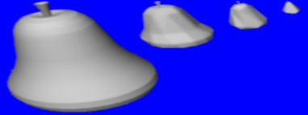

Tècniques d'acceleració d'imatge.
Level of detail rendering
El terme nivell de detall (Level-of-detail, LOD) fa referència a la
possibilitat d'utilitzar diferents representacions d'un objecte que varien en
precisió i complexitat.
La principal aplicació dels nivells de detall és l'acceleració de
la visualització: els objectes que estan lluny de l'observador i que
per tant ocupen una petita part de la pantalla es poden visualitzar
amb una representació simplificada (amb un nombre molt reduït de
cares), mentre que les representacions més detallades es reserven pels
objectes que estan en primer pla:

La utilització de nivells de detall requereix:
- Disposar d'un model d'escena multiresolució que proporcioni
diferents representacions de cada objecte, amb diferents graus de detall i
complexitat. Sovint les diferents simplificacions d'un objecte es calculen
de forma automàtica mitjançant algorismes de simplificació. El model
multiresolució ha d'incloure, per cada representació simplificada, una
mesura de l'error d'aproximació, que serà utilitzat per
seleccionar la representació més adient per visualitzar l'objecte.
Sovint en comptes de l'error d'aproximació, es proporciona directament
el rang de distàncies vàlides per la visualització d'una representació
determinada.
- Disposar en temps de visualització d'un algorisme de selecció del
nivell de detall, en funció de la seva grandària, la seva distància a
l'observador, la seva importància semàntica, etc.